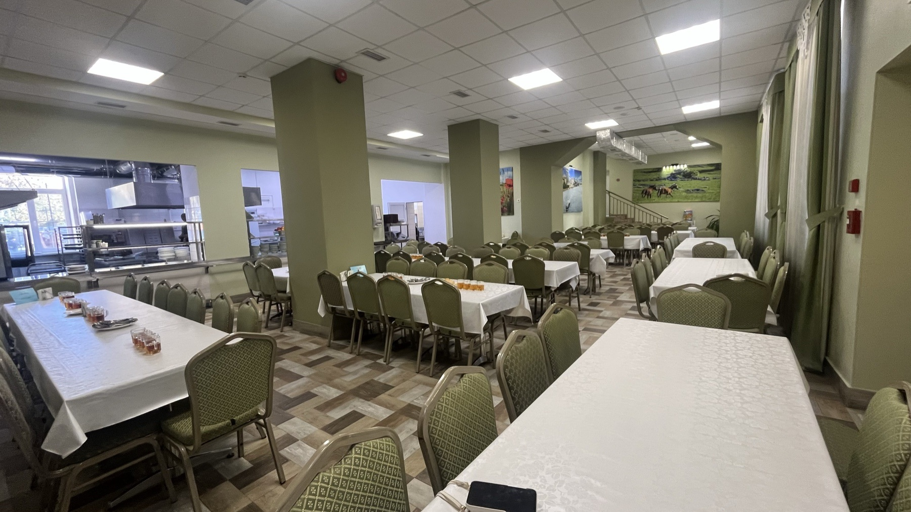
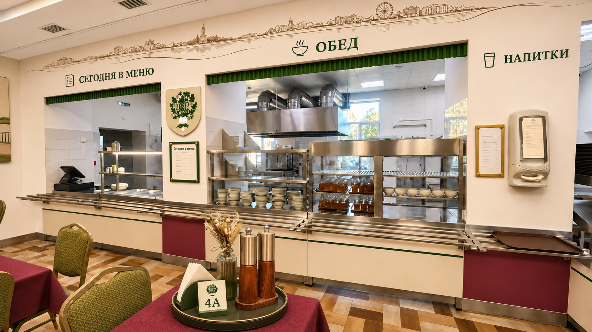
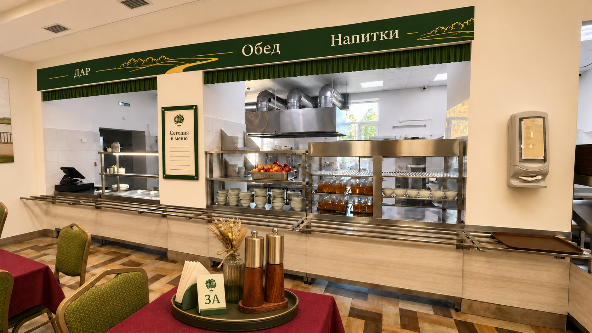
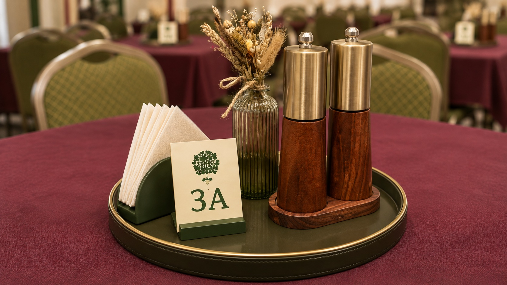

Кашпо у окон
Высокое рифлёное и низкое гладкое кашпо образуют группу справа. Третье стоит ближе к стене с гербом. Расстановку сверяют по свободным участкам у стены.
Светлая и зелёная раздача. На общем виде видны кашпо, оконный текстиль, герб с рисунком Дона и светлый короб.
Общий вид
Выберите вариант и потяните границу сравнения. Слева фотография, справа проект.
 Проект
Проект

Исходное фотоБордовые скатерти, зелёный торец с гербом и Доном. Светлая раздача, текстиль и кашпо у окон в одном кадре. Бежевые колонны и закупленная круглая сервировка по фото.
Открыть проект крупноВысокое рифлёное и низкое гладкое кашпо образуют группу справа. Третье стоит ближе к стене с гербом. Расстановку сверяют по свободным участкам у стены.
Тонкая линия реки, набережная и Ворошиловский мост продолжают рисунок над раздачей. Панно Ростова размещаются на существующих поперечных стенах.
На общем ракурсе число отверстий условно. На крупном ракурсе показаны три существующие решётки.
Детали
Оба варианта используют существующие проёмы, меню в зелёной рамке и короткое оформление над выдачей.

Бежевый фон, коричневый рисунок Ростова, зелёные надписи и герб над меню.

Лесной зелёный, золотая линия Дона и светлые надписи.
Шторки показаны короткими и со стороны зала. Материал и крепление согласуют с ответственным за питание и обслуживание оборудования. Если текстиль у проёма не подходит, ту же форму можно выполнить съёмной моющейся планкой.

Круглый тёмный поднос с кантом, высокие мельницы в общей деревянной подставке и ребристая бутылочка с сухоцветами воссозданы по фото заказчика. Рядом табличка класса с гербом и салфетница.